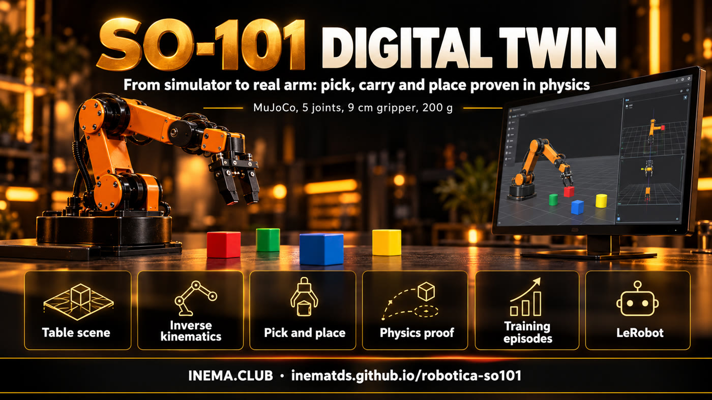

The arm headed for the table already trains in the simulator
Simulation twin of the SO-101: picks up, carries and drops light objects in physics, generates training data and proves the plan before a single motor is powered on.
It is a virtual copy (a "twin") of the SO-101 robotic arm, the low-cost 5-joint kit used with LeRobot, running in the MuJoCo physics simulator. It is for anyone who is going to build the arm and wants to test first: the twin picks up a cube, a tennis ball and a small pot and puts them in a tray, records the movements as training data and shows whether a plan works. All you need is a computer with Linux and Python; the real arm comes in the later phases.
What it is
One project per robot: this one is for the SO-101
It continues robotica-real2sim, which did the same with a Franka Panda industrial arm. The SO-101 reaches half as far and carries 15 times less, so almost everything changed: kinematics, gripper, table and objects.

🦾 The right arm
Official SO-101 model (MuJoCo Menagerie): 5 joints in the arm, a gripper with one fixed finger and one that rotates, servos with a maximum torque of 2.94 N·m.
🦾 Real pick and place
A 3 cm cube, a tennis ball and a 4 cm pot go into the tray in physics: 50 out of 50 episodes for each one.
🦾 Proof before the motor
Every plan runs dozens of times with variations in position and size. Nothing goes to the real arm without passing the worst-case test.
How it works
From the described table to training data
The table becomes a cena.json file (written by hand or extracted from a photo by a vision model). From there on, everything runs locally, with no API.
cena.json→MuJoCo scene with the SO-101→motion generator→test with variations→episodes + annotation→LeRobot dataset
1
5-joint kinematics
The tip position rules; the gripper points straight down when possible and tilts on its own when the arm cannot reach. The wrist rotation chooses which side the gripper closes on.
2
Asymmetric gripper
The object is grasped against the fixed finger; the ball is grasped slightly below its center, otherwise the moving finger pushes it down and it slips.
3
Path with detour
The carried object passes only 1.5 cm above the tray rim and goes around whatever is on the table: going over a tennis ball is already out of reach.
Prerequisites
What you need to run it
Tested on Linux with Python 3.12. No dedicated graphics card needed: images are rendered through EGL.
Python 3.10+ and git
The installer creates the virtual environment and downloads the SO-101 model.
git clone https://github.com/inematds/robotica-so101
cd robotica-so101 && ./instalar.sh
ffmpeg (for video)
Only for the filmar command.
sudo apt install ffmpeg
LeRobot (optional)
Only to export the episodes as a LeRobot dataset.
./instalar.sh --lerobot
User guide · step by step
From zero to training data
All commands below run in the project folder. Always use MUJOCO_GL=egl if there is no display (r2s.py already does this).
1
Install and test
The tests check the scene, the gripper reach, the plans and the episodes.
./instalar.shpython3 testes/rodar.py # 14 cases -> TUDO OK
2
View the table
The example scene has a cube, a tennis ball, a small pot and a tray, 15 to 30 cm from the base. Cameras: geral (overview), cima (top), frente (front) and pulso (wrist).
./r2s.py ver exemplos/mesa-so101/cena.json mesa.png --camera geral
3
Film the arm at work
A video of the scene's task (pick up the cube and put it in the tray), with three cameras side by side.
The plan is a list of pick → destination steps. The test runs N times, each time with a slightly different table, and reports which step fails and why. Slots in the tray are computed from the size of each object.
Each episode randomizes the position, rotation and mass of the objects, records joints and commands at 50 Hz and a 4-level annotation (goal, subtask, primitive, events). With --imagens, it also records the cima and pulso cameras.
A vision model via subscription (Codex or Claude) reads the photo of the table and returns the objects in centimeters; the script brings everything within the SO-101's reach and warns about anything that exceeds the gripper (9 cm) or the payload (200 g).
./r2s.py foto foto.jpg cena.json --motor codex
Results
What the twin already does (15/10/2026)
Numbers measured on the exemplos/mesa-so101 scene, seed 0. The video has subtitles in Portuguese.
Picking up the cube: the wrist rotates so the gripper closes on one face of the cube.End of the plan: the three objects in different slots, each one sized to its object.
Test
Result
3 cm cube to the tray
50/50 episodes
Tennis ball (6.7 cm, 58 g)
50/50 episodes
4 cm pot
50/50 episodes
All three in the same tray, correct measurements
18/20
All three, size off by ±15%
18/20
All three, worst case (tray 15% smaller)
6/20: the three barely fit
Cube + pot without slots × with slots
0/6 × 6/6
Reach measured on the model: with the gripper pointing straight down, the SO-101 reaches 15 to 30 cm from the base, up to about 8 cm high. Closer, farther or higher, the gripper has to tilt. The manufacturer states 40 cm of reach; the model gives 46.8 cm with the arm fully extended.
Limits
What does not exist yet
So as not to promise what the project does not do.
Simulation only
The real arm has not been powered on yet. The driver for the Hiwonder HX servos in LeRobot has not been confirmed yet.
Can laid down
Laying a tall can down in a shallow tray exists in the Panda project, but has not been ported to the SO-101.
Perfect position
In the simulator the generator knows where each object is. In the real world, that position will come from the camera (Phase 4).